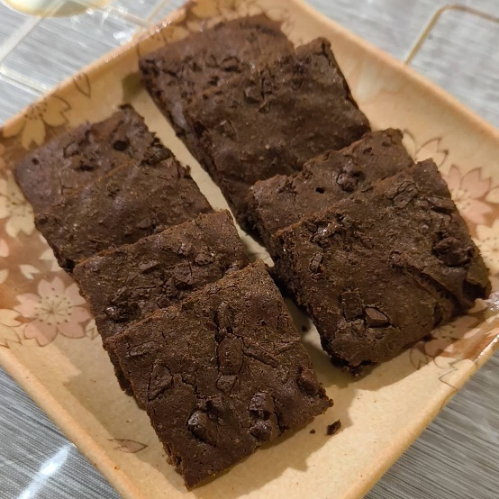

Back to Home
Air Fryer Brownies

Description
Brownies made quick and easy with an air fryer.
Ingredients
- 1/3 cup flour
- 1/4 cup cocoa powder
- 1 pinch of salt
- 1/4 cup unsalted butter, melted
- 1/2 cup granulated sugar
- 1 teaspoon vanilla extract
- 1 large egg
- 1/4 cup chocolate chips
Steps
- Stir the flour, cocoa powder, and salt together in a bowl. Set Aside.
- In another bowl, stir the melted butter, sugar, and vanilla extract together. Once combined, add the egg and stir again until all combined.
- Add the dry mixture to the wet mixture and stir until no streaks of flour remain. Fold in some of the chocolate chips.
- Preheat the air fryer to 340°F or 170°C.
- Line a parchment paper in the air fryer and pour the batter. Sprinkle the remaining chocolate chips on top.
- Bake for 10-14 minutes or until brownies have formed a thin crust and appear set in the middle.
- Let cool and ready to serve.